What you are about to build
Steps 1–10 leave you with two things running at the same time on your computer:
- A MySQL database running inside a Docker container. This stores products, orders, stock, and customers.
- A Django web server running directly on your machine. This serves the storefront at
http://127.0.0.1:8000/.
Your browser talks to Django, and Django talks to MySQL. Steps 11–12 then add a third piece — the MetroDrip phone app, which talks to the same Django application through the mobile API instead of serving HTML. The guide starts a second local Django process on port 8080 for that API while the storefront process remains on port 8000. Nothing in the app half changes the web half, so you can stop after Step 10 and still have a complete working storefront.
Installing MySQL directly on your computer is fiddly and different on every operating system. Docker gives everyone on the team the exact same database version and settings with one command, and you can delete it cleanly when you are done. You do not need to learn Docker to follow this guide — just three commands.
First time on a fresh machine: 30–45 minutes for the storefront (Steps 1–10),
mostly waiting for downloads.
The app (Steps 11–12): budget an hour or more for the first native development
build, especially if Android Studio or Xcode still needs to download an SDK.
Every time after that: about 30 seconds — see the cheat sheet.
Install the tools
You need five things. Install them in this order, and restart your terminal after each one so it picks up the new commands.
| Tool | Version | What it does |
|---|---|---|
| Git | any recent | Downloads the project code from GitHub. |
| Python | 3.14 | The language MetroDrip is written in. |
| Docker Desktop | 28+ | Runs the MySQL database in a container. |
| uv | any recent | Creates the Python environment and installs libraries. Much faster than pip. |
| Node.js | 22.13 or newer | Only needed for the phone app in Step 11. Expo SDK 57 does not support older Node releases. |
Node.js, and later the Android SDK or Xcode, exist purely for the phone app. If you are here to run the website, install the first four tools and stop — Step 11 lists the mobile toolchain separately so nobody downloads several gigabytes of SDK by accident.
Windows
Download and run the installers:
- Git for Windows — accept the defaults.
- Python 3.14 — tick “Add python.exe to PATH” on the first screen. This is the single most common setup mistake.
- Docker Desktop — restart your computer when it asks.
- Node.js 22 LTS or newer — for the phone app only; skip it if you are not doing Step 11.
Then open PowerShell and install uv:
powershell -ExecutionPolicy ByPass -c "irm https://astral.sh/uv/install.ps1 | iex"macOS
The easiest route is Homebrew. Open Terminal and run:
# Install Homebrew first if you do not have it.
/bin/bash -c "$(curl -fsSL https://raw.githubusercontent.com/Homebrew/install/HEAD/install.sh)"
# Then the tools. node is only needed for the phone app (Step 11).
brew install git python@3.14 uv node
brew install --cask dockerOpen the Docker app from your Applications folder once, so it can finish setting itself up.
Linux (Debian / Ubuntu)
# Git and build basics.
sudo apt update && sudo apt install -y git curl
# Docker Engine and the Compose plugin.
curl -fsSL https://get.docker.com | sudo sh
sudo usermod -aG docker "$USER" # then log out and back in
# uv (it can install Python 3.14 for you in the next step).
curl -LsSf https://astral.sh/uv/install.sh | sh
# Node.js 22.13+, for the phone app only (Step 11). Distro packages are often
# older, so use the NodeSource 22.x repository instead of Ubuntu's default.
curl -fsSL https://deb.nodesource.com/setup_22.x | sudo -E bash -
sudo apt install -y nodejsThe usermod line lets you run Docker without sudo. You must log out and back in for it to take effect.
Check everything installed
Close your terminal, open a new one, and run these. Each should print a version number:
git --version
python --version
docker --version
uv --versiongit --version
python3 --version
docker --version
uv --versiongit --version
docker --version
uv --versionIf you are continuing to the phone app, verify its tool as well:
node --version # v22.13 or newer
npm --versionThe tool installed but your terminal does not know about it yet. Close every terminal window and open a fresh one. If it still fails on Windows, re-run the Python installer, choose Modify, and make sure “Add Python to environment variables” is ticked.
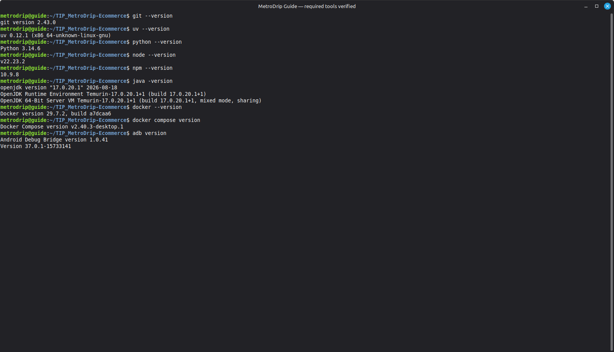
Open full-sizeGet the code
Pick a folder you can find again — Documents is fine. Then clone the repository and move
into it. Every command from here on assumes you are inside the project folder.
git clone https://github.com/SecretlySpy/TIP_MetroDrip-Ecommerce.git
cd TIP_MetroDrip-EcommerceRun dirlsls and you should see manage.py, requirements.txt, and folders named apps and config.
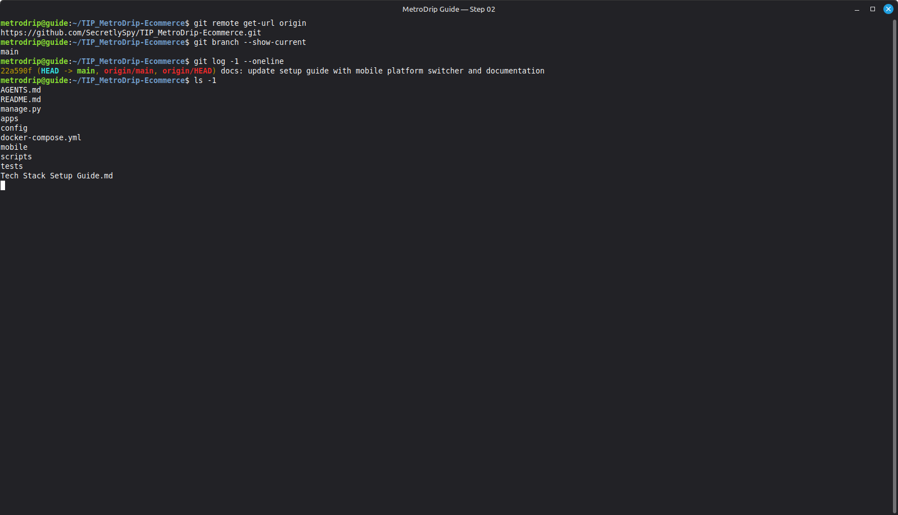
Open full-sizemanage.py, requirements.txt, apps/, and config/.Create the Python environment
A virtual environment is a private folder of Python libraries that belongs to this
project only. It stops MetroDrip's libraries from clashing with anything else on your computer.
We create one called .venv, then install everything the project needs into it.
uv venv .venv --python 3.14
uv pip install --python .venv/Scripts/python.exe -r requirements.txtuv venv .venv --python 3.14
uv pip install --python .venv/bin/python -r requirements.txtuv venv .venv --python 3.14
uv pip install --python .venv/bin/python -r requirements.txtThis downloads Django, the MySQL driver, and the rest. It takes a minute or two the first time.
We write out .venv/Scripts/python.venv/bin/python.venv/bin/python in full instead of “activating” the environment.
It is more typing, but it works identically in every terminal and removes a whole category of
“it works for me” problems. If you prefer, you can activate it once per terminal session:
.venv\Scripts\Activate.ps1 # PowerShellsource .venv/bin/activatesource .venv/bin/activate…after which plain python manage.py ... works.
Confirm it worked
.venv/Scripts/python --version
Python 3.14.6.venv/bin/python --version
Python 3.14.6.venv/bin/python --version
Python 3.14.6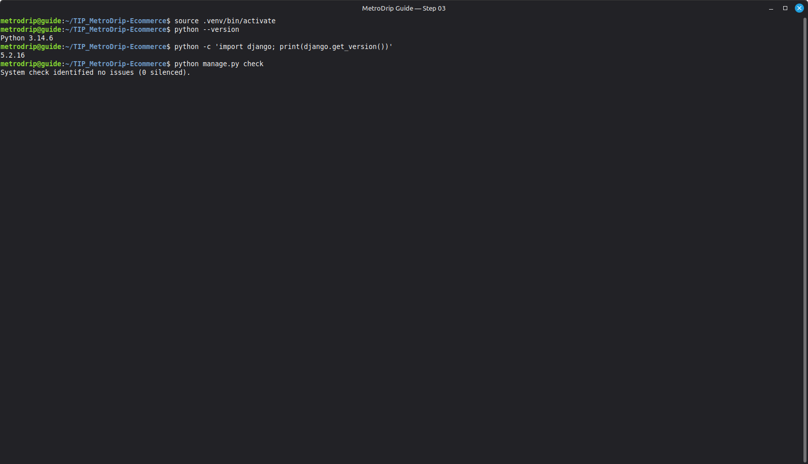
Open full-size.venv reports Python 3.14 without an import or path error.Create your configuration file
The project reads its settings — database password, secret key — from a file called .env.
That file is never committed to Git, because it holds secrets. A safe example is
provided, and its defaults already match the Docker database, so you can copy it as-is.
Copy-Item .env.example .envcp .env.example .envcp .env.example .env| Setting | Local value | Meaning |
|---|---|---|
DJANGO_SECRET_KEY | provided | Signs cookies and sessions. Fine for local use; a real deployment needs its own. |
MYSQL_DATABASE | metrodrip | Name of the database Django connects to. |
MYSQL_USER | metrodrip | Database username. |
MYSQL_PASSWORD | metrodrip | Database password. |
MYSQL_HOST | 127.0.0.1 | Your own machine — the Docker container publishes MySQL here. |
MYSQL_PORT | 3306 | The standard MySQL port. |
.env is already listed in .gitignore, so Git will ignore it. Do not force-add it,
and never paste real passwords or API keys into a public repository or a group chat.
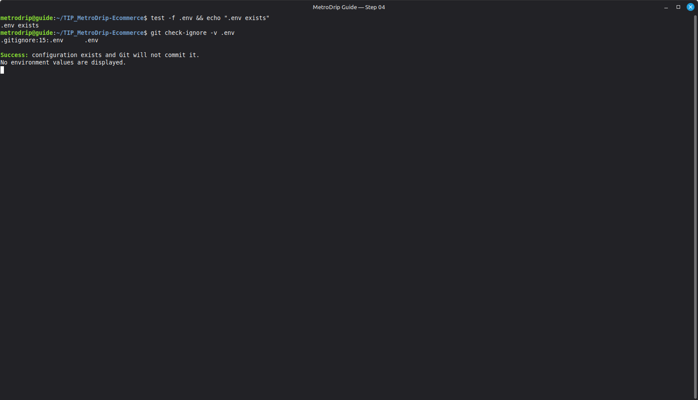
Open full-size.env exists locally and Git reports it as ignored; the screenshot deliberately reveals no values.Start the database
Make sure Docker Desktop is open and running first — look for the whale icon. Then start the two data containers:
docker compose up -d db redis --waitReading that command:
up— create and start the containers-d— “detached”, meaning they run in the background and give your terminal backdb redis— the database and the Redis cache. The web app itself runs on your machine, not in Docker--wait— pause until both report that they are genuinely ready for connections
You should see both finish at Healthy:
Container metrodrip-mysql Started
Container metrodrip-redis Started
Container metrodrip-redis Healthy
Container metrodrip-mysql Healthy
Nothing does yet, and that is deliberate. Django ships with no CACHES setting outside the
test suite, so this Redis sits idle on port 6379 until you either point CACHES at it or run
the optional services sidecars. It is in this command because docker compose up -d
with no arguments starts exactly these two — the sidecars sit behind a
--profile services flag — so starting both here matches what the rest of the team runs and
keeps the console rate limiter (Step 8) one setting away from being shared instead
of per-process. Leaving it out changes nothing about the storefront.
Docker has to download the MySQL image (a few hundred MB), the much smaller Redis image, and initialise the database. Give it a couple of minutes. Every start after that is nearly instant.
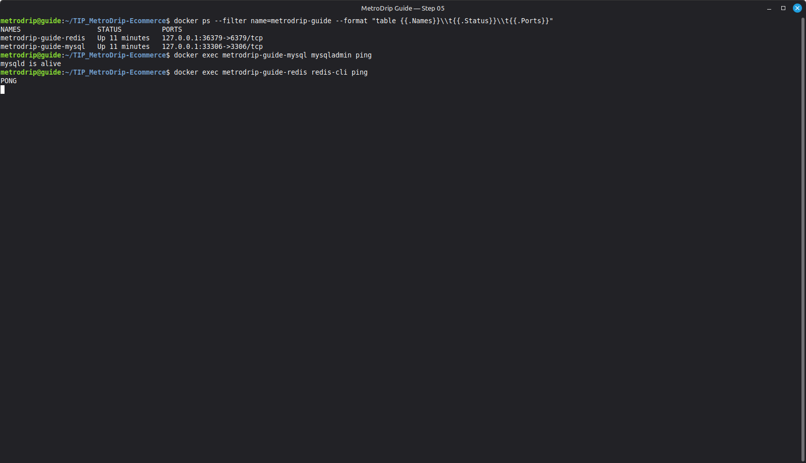
Open full-sizemetrodrip-guide-* names and loopback-only ports so it cannot touch an existing
developer database; mysqld is alive and PONG are the equivalent direct checks.
Build the tables and load demo data
The database is running but completely empty. Two commands fix that: migrate creates the tables, and seed_demo fills them with sample products so there is something to look at.
.venv/Scripts/python manage.py migrate
.venv/Scripts/python manage.py seed_demo.venv/bin/python manage.py migrate
.venv/bin/python manage.py seed_demo.venv/bin/python manage.py migrate
.venv/bin/python manage.py seed_demo
On a second run you will see
Demo seed complete: categories=0, products=0, variants=0….
That is not an error. The seed is idempotent — it only reports how many rows it
newly created. Zero means the data was already there from a previous run, which is exactly
what should happen. Verify with the check in Step 9.
Which seed command is the real one
seed_demo is the only canonical catalogue seed: five curated products with
real copy, the ones any demo or screenshot should be built from. Everything else in the repository that
looks like a seed is a development fixture, and they are not interchangeable:
seed_demo does not create the optional Men/Women category tree and does not attach product
photography. Empty image arrays and neutral product placeholders are therefore expected on a clean
demo database. Run seed_mock_catalog only when you specifically need the populated category,
filter, and pagination examples below.
| Command or script | Produces | Use it for |
|---|---|---|
manage.py seed_demo | 5 curated products | Canonical. Demos, stakeholder review, screenshots |
manage.py seed_mock_catalog | bulk placeholders | Category, filter, and pagination testing |
seed_assignment.py, seed_more.py, seed_200.py, seed_collections.py | Legacy ad-hoc catalogues, from a few products to 200-per-branch targets | Local compatibility and load work only; their output is not the canonical capture dataset |
Each of those root-level scripts adds to what is already there rather than replacing it, so a
long-lived development database can drift a long way from five products. That is fine for exercising
pagination locally, but it is not what a canonical demo should look like. Count the current rows in
Step 9. To get back to a demo-shaped catalogue, reset the
database (Step 13) and run migrate and seed_demo alone.
Fill the catalogue for category browsing
seed_demo gives you five products — enough to prove the app runs, but not enough to
exercise the category menu or pagination. A second command adds bulk placeholder stock:
# See the plan first — this writes nothing.
.venv/Scripts/python manage.py seed_mock_catalog --dry-run
# Create 100 placeholders, spread evenly across every subcategory.
.venv/Scripts/python manage.py seed_mock_catalog# See the plan first — this writes nothing.
.venv/bin/python manage.py seed_mock_catalog --dry-run
# Create 100 placeholders, spread evenly across every subcategory.
.venv/bin/python manage.py seed_mock_catalog# See the plan first — this writes nothing.
.venv/bin/python manage.py seed_mock_catalog --dry-run
# Create 100 placeholders, spread evenly across every subcategory.
.venv/bin/python manage.py seed_mock_catalog| Behaviour | What it means for you |
|---|---|
--count | How many placeholders to keep, not the total catalogue. Defaults to 100, so a database with 12 real products ends up with 112. |
| Distribution | Spread evenly across every subcategory, so no category is left empty. |
| Safe to rerun | Names are derived from the category and a sequence number, so a second run finds everything already there and writes nothing. |
| Your stock is safe | Existing quantities, reservations, and thresholds are never reset. |
| Spotting them | Placeholders are flagged is_mock and filterable in the admin. Otherwise they behave like any other product. |
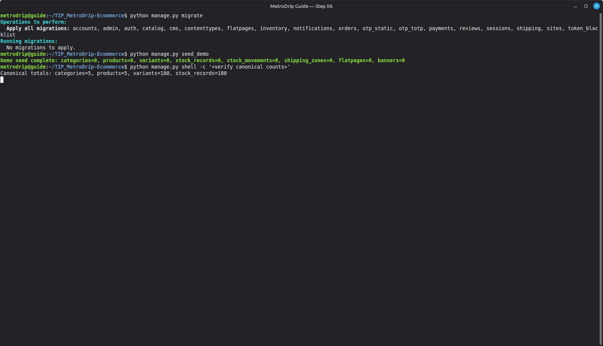
Open full-sizeseed_demo reports its result; zero newly created rows is valid on a repeat run.Run the server
.venv/Scripts/python manage.py runserver.venv/bin/python manage.py runserver.venv/bin/python manage.py runserverLeave that terminal open — the server runs until you stop it. Now open:
http://127.0.0.1:8000/You should see the MetroDrip storefront with a product grid. 🎉
The dev server auto-reloads. Edit a template or a view, save, refresh the browser, and your change is live — no restart needed. Press Ctrl+C in that terminal to stop it.
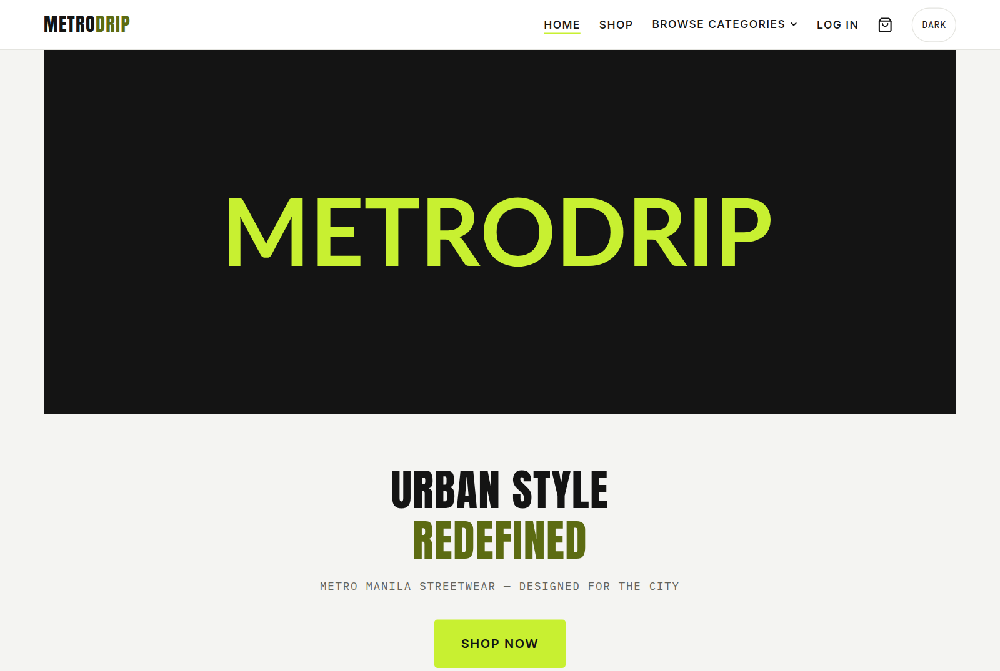
Open full-sizeseed_demo catalogue has product data but no attached photography.
Browse by category
Browse Categories in the navigation bar opens a menu of every main category and its
Men and Women subcategories, with a live product count beside each one. This populated
two-level example requires the optional seed_mock_catalog command from Step 6; it is not
part of the five-product canonical seed.
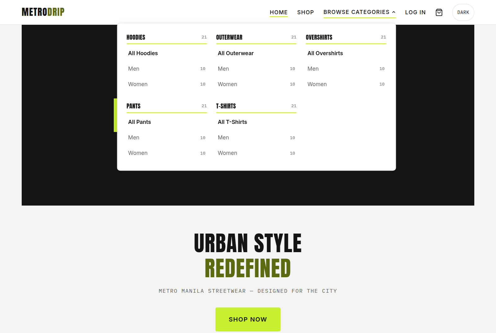
Open full-sizeseed_mock_catalog. The menu opens
with a click or keyboard and closes with Escape; the visible counts come from the current database.
Clicking a main category shows everything in that branch — its own products plus
every subcategory's. Clicking Men or Women narrows to just that
subcategory. Try /shop/?category=hoodies against
/shop/?category=hoodies-men and compare the counts.
Create demo accounts (customer, merchant, admin)
MetroDrip has three login surfaces. Shoppers use the storefront account pages.
Staff use two separate consoles: Merchant (/merchant/) for catalog,
stock, and orders, and Administrator (/admin/) for accounts, roles,
and shipping fees. A merchant cannot sign into the admin console and vice versa.
Both staff sign-in pages use the same phone-friendly layout as the storefront while keeping a
distinct Merchant or Administrator identity. Choose Light or Dark
on the sign-in page; after sign-in, the same selector is at the bottom of the console sidebar.
The choice is saved in this browser and shared with the storefront. Staff accounts are provisioned
with create_console_account below—there is intentionally no public Merchant or
Administrator sign-up form.
seed_demo loads products only — it does not create users. Open a
second terminal in the project folder (leave the server running) and create the
three local demo accounts below.
Local demo credentials
Use these on your own machine only. They match the accounts created by the commands in this step. Never reuse them on a public or staging host.
| Role | Password | Login URL | |
|---|---|---|---|
| Customer (shopper) | customer@metrodrip.test |
MetroDrip!Shopper99 |
http://127.0.0.1:8000/accounts/login/ |
| Merchant / Seller | merchant@metrodrip.test |
Str33twear#Console1 |
http://127.0.0.1:8000/merchant/ |
| Administrator | admin@metrodrip.test |
Str33twear#Console1 |
http://127.0.0.1:8000/admin/ |
Console and storefront logins use email, not a separate username field. Paste the full address into the email box.
Create the administrator and merchant consoles
Prefer create_console_account over createsuperuser when you want to prove
console separation. Superusers can open both consoles and therefore do not demonstrate the FR-22
boundary.
.venv/Scripts/python manage.py create_console_account --role administrator `
--email admin@metrodrip.test --name "Demo Admin" --password "Str33twear#Console1"
.venv/Scripts/python manage.py create_console_account --role merchant `
--email merchant@metrodrip.test --name "Demo Merchant" --password "Str33twear#Console1"
.venv/Scripts/python manage.py sync_console_roles.venv/bin/python manage.py create_console_account --role administrator \
--email admin@metrodrip.test --name "Demo Admin" --password 'Str33twear#Console1'
.venv/bin/python manage.py create_console_account --role merchant \
--email merchant@metrodrip.test --name "Demo Merchant" --password 'Str33twear#Console1'
.venv/bin/python manage.py sync_console_roles.venv/bin/python manage.py create_console_account --role administrator \
--email admin@metrodrip.test --name "Demo Admin" --password 'Str33twear#Console1'
.venv/bin/python manage.py create_console_account --role merchant \
--email merchant@metrodrip.test --name "Demo Merchant" --password 'Str33twear#Console1'
.venv/bin/python manage.py sync_console_roles
sync_console_roles attaches the right Django group permissions so each console is not empty.
Re-run it any time after you move models between consoles.
Create the shopper account
.venv/Scripts/python manage.py shell -c "from apps.accounts.models import Customer; u, _ = Customer.objects.get_or_create(email='customer@metrodrip.test', defaults={'name': 'Demo Shopper'}); u.set_password('MetroDrip!Shopper99'); u.save(); print('ok', u.email)".venv/bin/python manage.py shell -c "from apps.accounts.models import Customer; u, _ = Customer.objects.get_or_create(email='customer@metrodrip.test', defaults={'name': 'Demo Shopper'}); u.set_password('MetroDrip!Shopper99'); u.save(); print('ok', u.email)".venv/bin/python manage.py shell -c "from apps.accounts.models import Customer; u, _ = Customer.objects.get_or_create(email='customer@metrodrip.test', defaults={'name': 'Demo Shopper'}); u.set_password('MetroDrip!Shopper99'); u.save(); print('ok', u.email)"Or register interactively at http://127.0.0.1:8000/accounts/register/ with any email you control.
For a break-glass account that can open both consoles, run createsuperuser instead.
That is convenient for debugging, but it is not a substitute for the scoped merchant
and administrator accounts above when you demo console separation.
.venv/Scripts/python manage.py createsuperuser.venv/bin/python manage.py createsuperuser.venv/bin/python manage.py createsuperuserTwo-factor authentication and login limits
Both consoles support TOTP two-factor authentication — the six-digit codes an authenticator app generates — and both rate-limit failed sign-ins. Rate limiting is active by default; blanket TOTP enforcement is off, so the commands above give you a working console straight away.
Once an account has a confirmed TOTP device, its password alone stops
working while that device exists; there is no self-service bypass or “remember this browser”.
The installed django-otp administrator form is a low-level device editor, not a verified
enrolment flow: a newly saved device defaults to confirmed before the form has proved a code. This
guide therefore does not direct beginners to enable TOTP. Keep CONSOLE_REQUIRE_OTP off
unless an authorized operator has tested provisioning and recovery with a second administrator.
Check where you stand before changing anything:
.venv/Scripts/python manage.py check_console_otp.venv/bin/python manage.py check_console_otp.venv/bin/python manage.py check_console_otpIt lists every staff account and whether a password alone would still get in:
Active staff accounts: 2
With a confirmed TOTP device: 0
Without a device (2FA bypassable): 2
- admin@metrodrip.test (administrator)
- merchant@metrodrip.test (merchant)
check_console_otp is a readiness report, not an enrolment command. The low-level device model
is available to authorized administrators, but this repository does not yet provide a self-service
scan-and-confirm workflow or recovery-code flow. Production TOTP rollout is therefore an operator task,
not part of this local beginner setup.
| Setting | Default | What it controls |
|---|---|---|
CONSOLE_LOGIN_MAX_ATTEMPTS_PER_USER | 5 | Failed sign-ins per account per 15-minute window. This is the limit that actually protects an account. |
CONSOLE_LOGIN_MAX_ATTEMPTS_PER_IP | 20 | Failed sign-ins per address. Looser on purpose — office staff share one outbound IP. |
CONSOLE_LOGIN_TRUSTED_PROXY_DEPTH | 0 | 0 reads the direct connection and ignores X-Forwarded-For. Behind a reverse proxy set it to 1, or per-address limiting just measures the proxy. |
CONSOLE_REQUIRE_OTP | off | Requires a code from every staff account, enrolled or not. Keep it off until provisioning and recovery have been tested. |
The flag makes no exception for the superuser you would need in order to enrol anybody else, so
enabling it on a console where nothing is enrolled locks out every account at once.
check_console_otp --strict exits non-zero when anyone is still unenrolled, which is the
form to put in a deploy gate after a safe enrolment process exists.
They live in Django's cache, and this project configures no cache outside the test suite — so each
server process counts on its own, in memory, and a restart forgets everything. That is convenient
while you are testing (restart the server to clear a lockout) and misleading in production, where
several worker processes each get their own allowance. Pointing CACHES at the Redis from
Step 5 is what makes the numbers mean what they say.
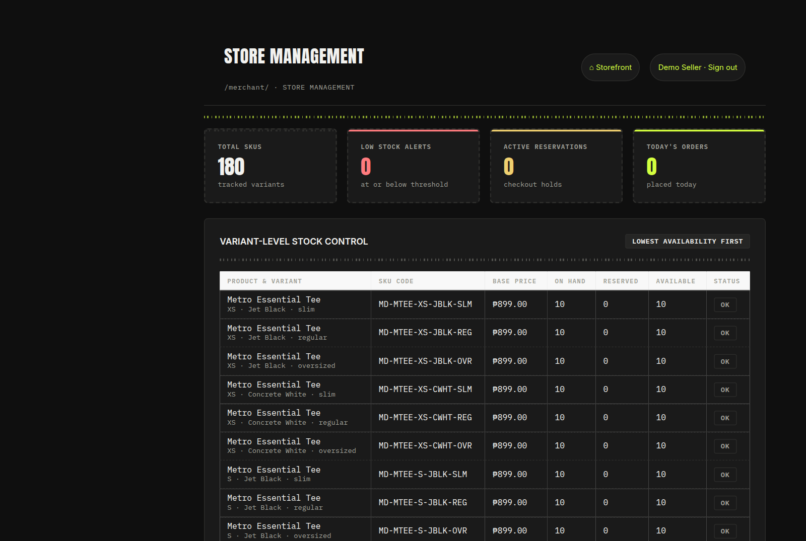
Open full-size/merchant/ exposes catalogue, inventory, and order work without administrator account controls; Light is available from the sidebar.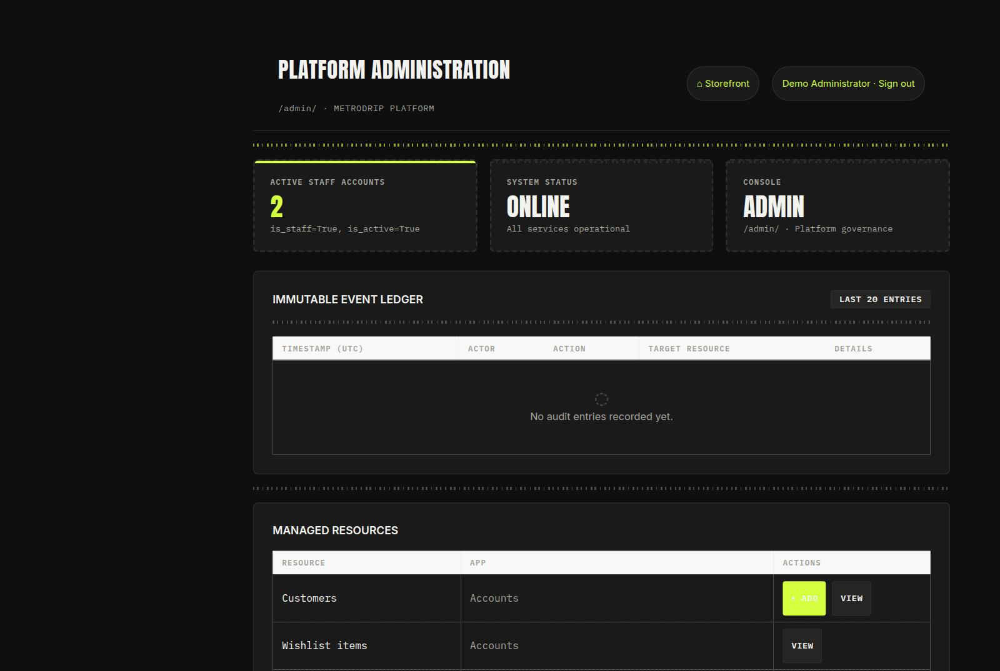
Open full-size/admin/ is a separate login surface for accounts, roles, and system configuration; Light is available from the sidebar.Check that everything works
Click through these pages in your browser. All of them should load without an error page:
| Page | Address | What you should see |
|---|---|---|
| Homepage | / | Banner and a grid of products |
| Shop | /shop/ | The current catalogue and its available filters |
| Main category | /shop/?category=hoodies | Hoodies in that branch; populated hierarchy examples require seed_mock_catalog |
| Subcategory | /shop/?category=hoodies-men | Only Hoodies → Men after the optional mock-catalogue seed |
| Product detail | /shop/<product-slug>/ | Sizes, colours, add-to-cart |
| Cart | /cart/ | Empty cart, or your items |
| Contact | /contact/ | Contact form |
| Login | /accounts/login/ | Customer sign-in — use customer@metrodrip.test |
| Register | /accounts/register/ | Customer sign-up form |
| Merchant console | /merchant/ | Merchant login — use merchant@metrodrip.test |
| Administrator console | /admin/ | Admin login — use admin@metrodrip.test |
| Health check | /healthz/ready/ | {"status": "ok"} |
| Liveness | /healthz/live/ | {"status": "ok"} — answers even if the database is down |
| Mobile API | /api/mobile/v1/catalog/products/ | JSON, but only with a version header — see below |
Visit /healthz/ready/. If it returns {"status": "ok"}, then Django started
and reached the database successfully. That single page proves both halves of the system.
Confirm the demo data actually loaded
Because seed_demo can report zeros, count the rows directly:
.venv/Scripts/python manage.py shell -c "from apps.catalog.models import Product, ProductVariant; print('products:', Product.objects.count(), '| variants:', ProductVariant.objects.count())".venv/bin/python manage.py shell -c "from apps.catalog.models import Product, ProductVariant; print('products:', Product.objects.count(), '| variants:', ProductVariant.objects.count())".venv/bin/python manage.py shell -c "from apps.catalog.models import Product, ProductVariant; print('products:', Product.objects.count(), '| variants:', ProductVariant.objects.count())"Any count above zero means the catalogue is populated and the storefront has something to show. Count it rather than assuming a number: five is what a freshly seeded database holds, and a development database that has had the padded fixture scripts run against it holds far more (see Step 6).
Confirm the mobile API answers
The app in Step 11 talks to the same Django application through
/api/mobile/v1/. You can prove that half works from a terminal, before installing a single
mobile tool. Every request must carry an X-Client-Version header — the API rejects requests
without one by contract, so that they can be correlated with released app versions:
curl.exe -H "X-Client-Version: 1.0.0" http://127.0.0.1:8000/api/mobile/v1/catalog/products/curl -H 'X-Client-Version: 1.0.0' http://127.0.0.1:8000/api/mobile/v1/catalog/products/curl -H 'X-Client-Version: 1.0.0' http://127.0.0.1:8000/api/mobile/v1/catalog/products/A healthy answer is a paginated product object. The current count, IDs, names, and next-page URL depend on which optional fixtures you loaded, so check the response shape instead of comparing exact values:
{"count":<current integer>,"next":<URL or null>,"previous":null,
"results":[{"id":<integer>,"name":"…","slug":"…",
"category":{"name":"…","slug":"…"},"price":<centavos integer>,"price_display":"₱…",
"images":[…],"review_avg":<number or null>,"review_count":<integer>}, …]}
price is an integer count of centavos, and price_display is the finished peso
string. The server sends both, and the
app renders the string it was given. The app never multiplies, adds, or rounds money anywhere — that
rule is why a total on a phone can never disagree with the total in the database.
Leave the header off and you get a 400 instead, which is the expected refusal, not a fault:
{"error": {"code": "missing_client_version",
"message": "Send the app version in the X-Client-Version header.",
"correlation_id": "26e5951f58f94c038cb674e497227dbf"}}
/api/mobile/v1/shipping/zones/ returns the three delivery zones with their fees
(NCR ₱99.00, Luzon ₱159.00, VisMin ₱199.00 as seeded), and
/api/mobile/v1/orders/ returns 401 until you send a token — both correct
answers, and both a faster check than launching an emulator.
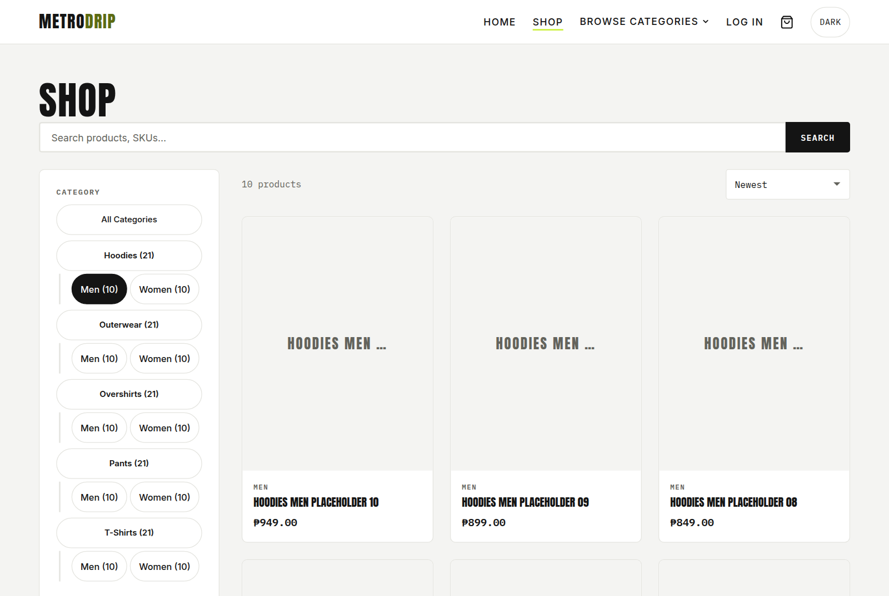
Open full-sizeseed_mock_catalog, the selected category and displayed result
count agree. Changing category preserves the active size, colour, price, search, and sort filters.
Try the shopping flow
- Optional fixture check: if you ran
seed_mock_catalog, open Browse Categories, choose a subcategory such as Hoodies → Men, and confirm its displayed product count. Otherwise skip this check. - From the canonical five-product storefront, click any product.
- Choose a size, colour, and fit, then add it to your cart.
- Open
/cart/and confirm the item and price are correct. - Go to checkout and fill in the delivery details.
- Complete the simulated payment and confirm the public order-tracking page says Paid.
- In a second tab, open
/merchant/and match the new order number under Orders.
A guest checkout is verified by its public Paid tracking page and the matching merchant-console order. It does not later appear in a newly created customer account and it creates no in-app customer notification. To verify Notifications in Step 12, sign in before checkout and open the Notifications action on Home after payment.
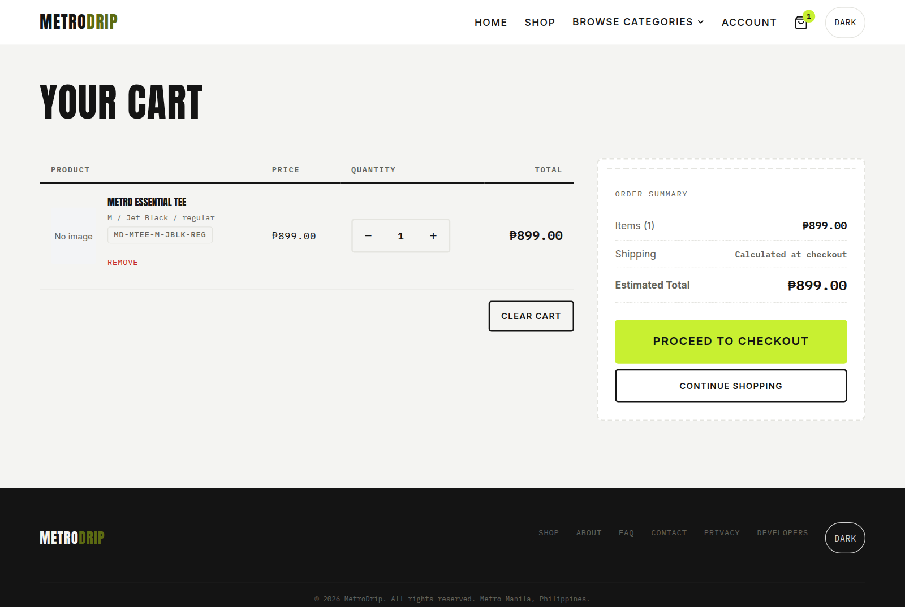
Open full-size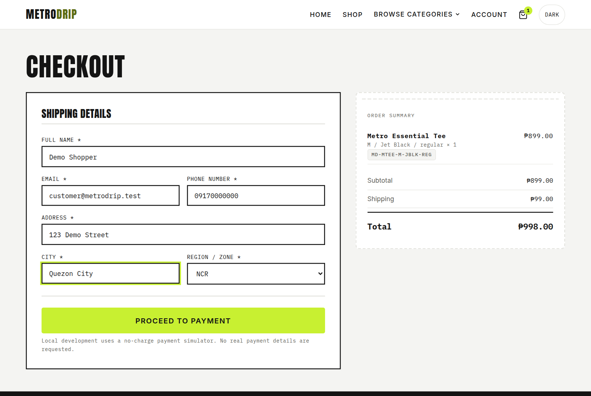
Open full-sizePAYMENT_PROVIDER=simulated to keep this tutorial off the PayMongo network.
Run the automated tests
The project ships with backend application tests plus structural checks for this guide. The backend application tests run against the real MySQL database, not a simplified stand-in, because some tests deliberately check what happens when two people buy the last item at the same moment — behaviour that only a real database reproduces.
The database container has to be up (Step 5) or every test will fail with a connection error.
.venv/Scripts/pytest.venv/bin/pytest.venv/bin/pytestA clean run ends with a single summary line. The exact number of tests, warnings, and elapsed time
changes as the project evolves; the durable success signal is that every collected test says
passed and the process exits successfully:
… passed, … warnings in …The full quality gate
These are the checks the project expects before a pull request, in the order they are cheapest to fix. Each one is also run automatically on GitHub when you push, so running them locally only saves you a round trip:
.venv/Scripts/python -m compileall -q apps config contracts jobs services tests manage.py # 1. does it even parse
.venv/Scripts/ruff check . # 2. find code problems
.venv/Scripts/ruff format --check . # 3. confirm formatting
.venv/Scripts/python manage.py check # 4. Django's own health check
.venv/Scripts/python manage.py makemigrations --check --dry-run # 5. no un-generated migrations
.venv/Scripts/pytest # 6. the suite.venv/bin/python -m compileall -q apps config contracts jobs services tests manage.py # 1. does it even parse
.venv/bin/ruff check . # 2. find code problems
.venv/bin/ruff format --check . # 3. confirm formatting
.venv/bin/python manage.py check # 4. Django's own health check
.venv/bin/python manage.py makemigrations --check --dry-run # 5. no un-generated migrations
.venv/bin/pytest # 6. the suite.venv/bin/python -m compileall -q apps config contracts jobs services tests manage.py # 1. does it even parse
.venv/bin/ruff check . # 2. find code problems
.venv/bin/ruff format --check . # 3. confirm formatting
.venv/bin/python manage.py check # 4. Django's own health check
.venv/bin/python manage.py makemigrations --check --dry-run # 5. no un-generated migrations
.venv/bin/pytest # 6. the suite
compileall catches a syntax error in a file no test happens to import — cheap insurance
that costs a second. makemigrations --check --dry-run fails if somebody changed a model
without generating the migration for it; it prints No changes detected and exits zero when
all is well. Checks for the phone app live in Step 12.
Optional: the background scheduler
Some jobs — such as releasing stock that a customer reserved but never paid for — run on a timer in a
separate process. runserver does not start it. To test that behaviour, open a third
terminal:
.venv/Scripts/python manage.py run_scheduler.venv/bin/python manage.py run_scheduler.venv/bin/python manage.py run_scheduler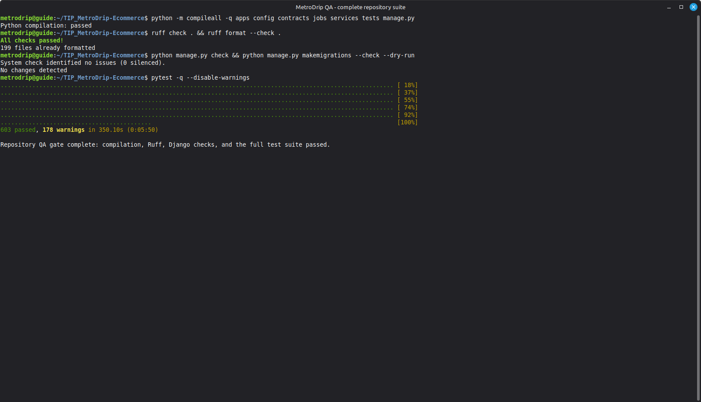
Open full-sizepytest -q --ignore=tests/test_guide_structure.py because the guide image-existence check
cannot pass before this screenshot and Step 13's screenshot exist. After all assets are present,
plain pytest above runs the complete suite, including the guide checks. Compare the passed
status, not a permanently documented count or duration.
Set up the phone app
mobile/ holds the customer app: React Native 0.86.3 and
React 19.2.3 on Expo SDK 57
(expo ~57.0.18), with TypeScript ~6.0.3. Its twelve screen
components target iOS and Android from one codebase. The app talks to the Django server you already have
running through the /api/mobile/v1/ endpoints you can already curl from
Step 9.
It is a shopper app only — there is no mobile merchant or administrator console, by design; staff work stays on the web. And it performs no money arithmetic at all: prices, subtotals, shipping, and totals arrive from the server as integer centavos plus a finished display string, and the app renders the string. So a wrong total is always a server bug, never a rounding difference on somebody's phone.
What you can build, on the machine you have
This is the constraint that decides everything else on this page, and it is not a MetroDrip decision: Apple's build tools only run on macOS. Android is reachable from anywhere.
| Your machine | Android | iOS | What that means in practice |
|---|---|---|---|
| Windows | Yes — emulator or a real phone | No | Xcode does not exist for Windows. Test iOS on a borrowed Mac or through a cloud build. |
| Linux | Yes — emulator or a real phone | No | Same reason. Everything else in this guide works identically. |
| macOS | Yes | Yes — simulator or a real iPhone | The only host that covers both targets. |
Three stages, from daily development to distribution
| Mode | Command | You need | Good for |
|---|---|---|---|
| Android emulator install | npm run android:emulator |
Node 22.13+, JDK 17, API 36, MetroDrip_Pixel_API36, and a ready local API |
Checks database-backed API readiness, builds/installs, restores ADB reverse, and opens localhost Metro explicitly. |
| Android emulator daily loop | npm run start:android:emulator |
The development client installed on the named AVD and a ready local API | Checks API readiness, then revalidates the AVD and reverse mapping before opening the exact loopback URL. |
| Physical device / iOS | npm start after npm run android or npm run ios |
LAN reachability or the Apple toolchain | Keeps the development client's LAN workflow for non-emulator targets. |
| EAS distribution | eas build --platform … |
EAS CLI, real Expo ownership, signing credentials, final API domain, privacy metadata, and brand assets | Producing a signed binary. Those external release inputs are intentionally not in this repository. |
MetroDrip includes native modules for secure storage, local authentication, notifications, and its
native splash. On the named emulator use npm run android:emulator once and
npm run start:android:emulator later. Physical devices and iOS use
npm run android or npm run ios, then npm start. None of these
commands installs or opens Expo Go.
The project uses Continuous Native Generation:
app.json is the source of
native settings, while android/ and ios/ are generated locally and ignored by
Git. Do not hand-edit a generated native file; change app configuration or a config plugin, then
regenerate it.
Install the mobile prerequisites
Check the required Node baseline first:
node --version # must be v22.13 or newer
npm --versionThen install the app's JavaScript dependencies and its configuration file:
cd mobile
npm ci
Copy-Item .env.example .env
cd ..cd mobile
npm ci
cp .env.example .env
cd ..cd mobile
npm ci
cp .env.example .env
cd ..
It holds exactly one setting, EXPO_PUBLIC_API_URL, and no secrets — anything prefixed
EXPO_PUBLIC_ is baked into the app bundle at build time and can be read out
of any installed copy. The app is designed to hold no credentials of its own; the value below is only
an address.
Install the native toolchain for your target
Android needs a JDK 17 and the Android SDK. Continuous Native Generation applies these project requirements when it creates the local native project:
| Piece | Version | Note |
|---|---|---|
| JDK | 17 | The CI and local build baseline. |
compileSdk / targetSdk | 36 | Required for current tooling and the 2026 Google Play target-API policy. |
minSdk | 24 | Android 7.0 minimum; the same clean debug APK was smoke-tested on API 24 and API 36. |
| Java API compatibility | desugar_jdk_libs 2.0.3 | A CNG config plugin enables core-library desugaring so Java time APIs work on API 24–25. |
| Emulator system image | API 36 | The documented and captured development target. |
| AVD | MetroDrip_Pixel_API36 | 10 GB virtual storage; keep this exact name for scripts and editor tasks. |
Windows has a scripted path. From the repository root, in PowerShell:
powershell -ExecutionPolicy Bypass -File scripts\setup-android-emulator.ps1
It is safe to re-run if a step fails. It installs the command-line tools to
%LOCALAPPDATA%\Android\Sdk, sets ANDROID_HOME and
ANDROID_SDK_ROOT, accepts the licences, installs platform-tools,
emulator, API 36 platform and Build Tools 36.0.0, and the
google_apis;x86_64 image. It creates a 10 GB AVD named
MetroDrip_Pixel_API36.
Restart your editor afterwards so it inherits the new environment variables.
You also need, separately: a JDK 17, and virtualisation enabled in your BIOS for the x86_64 emulator.
Install a JDK and the SDK, then create an emulator through Android Studio's Device Manager:
brew install --cask temurin@17
brew install --cask android-studio # then: SDK Manager → API 36 image + Build Tools 36.0.0
Add the SDK to your shell profile so expo and adb can find it:
export ANDROID_HOME="$HOME/Library/Android/sdk"
export PATH="$PATH:$ANDROID_HOME/platform-tools:$ANDROID_HOME/emulator"Install a JDK and the SDK, then create an emulator through Android Studio's Device Manager:
sudo apt install -y openjdk-17-jdk
# Android Studio: download from developer.android.com, or use your distro's
# package. Then in SDK Manager install API 36 + Build Tools 36.0.0.export ANDROID_HOME="$HOME/Android/Sdk"
export PATH="$PATH:$ANDROID_HOME/platform-tools:$ANDROID_HOME/emulator"
KVM must be available for a usable emulator — check with
kvm-ok (from the cpu-checker package) and add yourself to the
kvm group if it complains about permissions.
The capture and VS Code tasks target MetroDrip_Pixel_API36 by name. If you create a
differently named device, start it yourself before running the app. Do not reuse an Expo Go-specific
AVD workaround; this project installs its own Expo 57 development client on the documented API 36
target.
iOS requires macOS. There is no Windows or Linux path — not a limitation of this project. This repository targets iOS 16.4 or newer; current App Store submission requirements call for a qualifying Xcode 26.4 toolchain and the iOS 26.4 SDK.
- Xcode 26.4 or newer, opened once so it can finish installing its components.
- Command-line tools:
xcode-select --install. - CocoaPods:
brew install cocoapods. - A simulator: Xcode → Settings → Platforms → install an iOS runtime.
The first npm run ios runs pod install for you and takes a long time —
fifteen minutes is normal, and it compiles a large amount of native code. Subsequent runs are much
faster.
There is no committed mobile/ios/ directory or Podfile.lock. Expo generates
both from app.json and the lockfile when you run npm run ios. Generated native
files are disposable build output; make durable changes through app configuration or a config plugin.
The configuration includes local-network and Face ID usage descriptions, but an actual simulator,
device build, signing flow, and store upload still need to be run on qualifying Apple hardware.
Use npm run ios for the local development client; do not substitute Expo Go.
A real phone is often the fastest option, and on Windows or Linux it is the only way to see the app on real hardware. It also needs no emulator, no virtualisation, and no system image.
- Android: enable Developer options, turn on USB debugging, plug the
phone in, accept the trust prompt, and confirm with
adb devices. Thennpm run androidinstalls onto it. - iOS: plug the iPhone into the Mac and trust the computer; then enable Developer Mode under Privacy & Security (the phone restarts) and select it as the run destination in Xcode. A free Apple ID can sign a development build for your own device; distributing to anybody else needs a paid team.
- Either: the phone and your computer must be on the same Wi-Fi network,
and
EXPO_PUBLIC_API_URLmust use your computer's LAN IP address — see the next section.
ipconfig — look for IPv4 Address under your active adapter.
ipconfig getifaddr en0 for Wi-Fi.
hostname -I, or ip addr show.
It usually looks like 192.168.x.x or 10.x.x.x. It can change when you
reconnect to the network, which is a common cause of the app suddenly going offline.
Point the app at your server — the one setting that matters
This is where most first attempts fail, and the reason is worth understanding once rather than guessing
at three times. An emulator is a separate virtual computer. Inside it,
127.0.0.1 means the emulator itself — not your machine. So an app asking for
127.0.0.1:8080 is asking the emulator for a server the emulator does not have.
After copying mobile/.env.example to mobile/.env, open that file and set
EXPO_PUBLIC_API_URL to the row for your target below. The copied default is correct only for
the Android emulator.
| Where the app runs | EXPO_PUBLIC_API_URL | Why |
|---|---|---|
| Android emulator | http://10.0.2.2:8080/api/mobile/v1 |
Android maps 10.0.2.2 to the host machine's loopback. This is the shipped default. |
| iOS simulator | http://localhost:8080/api/mobile/v1 |
The simulator shares the Mac's network stack, so localhost is the Mac. |
| Physical phone | http://192.168.1.10:8080/api/mobile/v1 |
Your machine's LAN address — substitute your own. Same Wi-Fi network required. |
A server started as plain runserver listens on 127.0.0.1 only and will refuse
every connection from an emulator or a phone, however correct the app's address is. For all mobile work
start it as runserver 0.0.0.0:8080 — Step 12 does exactly that.
Development settings already accept 10.0.2.2, localhost,
127.0.0.1, and — while DEBUG is on — this machine's own LAN addresses, looked
up at start-up. If your phone is rejected with a 400 Bad Request naming the host, that
lookup failed on your network, and adding your address to ALLOWED_HOSTS in
config/settings/dev.py fixes it.
Verify JavaScript dependencies and the Android target
cd mobile
npx expo install --check
npx expo-doctor
npm run typecheck
npm run lint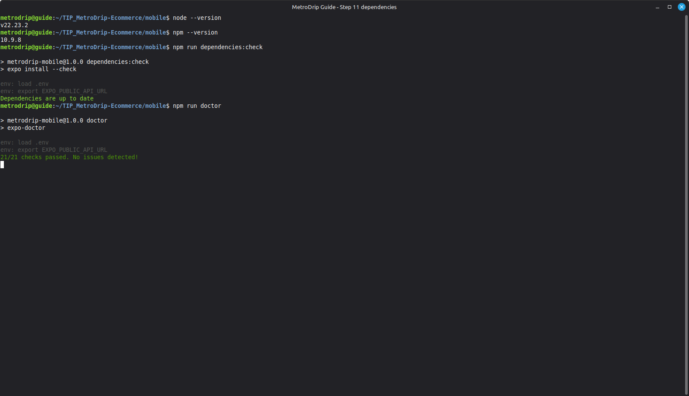
Open full-size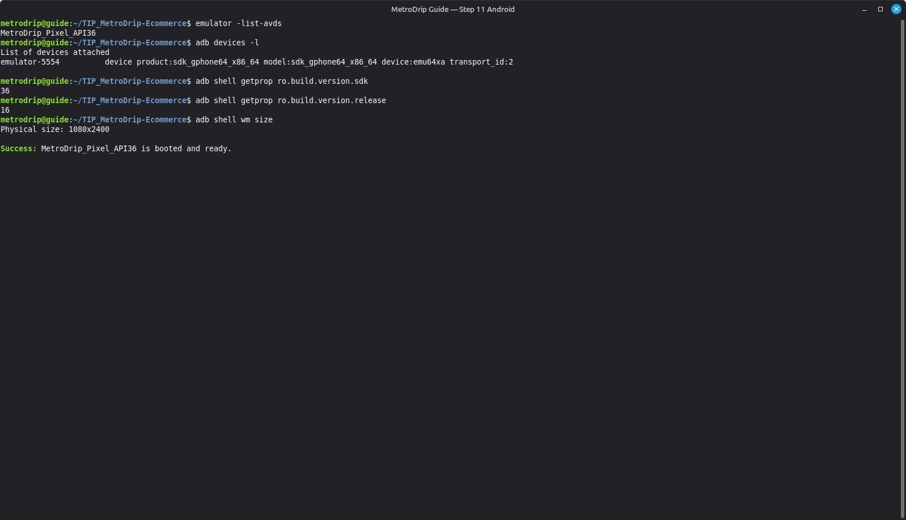
Open full-sizeMetroDrip_Pixel_API36.Run the app
Four things have to be running, and the order matters: each one needs the one before it. Open a terminal for each — they all keep running until you stop them.
Terminal 1 — the data containers
docker compose up -d db redis --waitAlready running from Step 5? Then this returns immediately and you can move on.
Terminal 2 — Django, bound so the app can reach it
Note both differences from Step 7: the address is 0.0.0.0:8080, and the
payment provider is set explicitly so checkout can complete without PayMongo keys.
$env:PAYMENT_PROVIDER="simulated"
.venv\Scripts\python.exe manage.py runserver 0.0.0.0:8080PAYMENT_PROVIDER=simulated .venv/bin/python manage.py runserver 0.0.0.0:8080PAYMENT_PROVIDER=simulated .venv/bin/python manage.py runserver 0.0.0.0:8080
Development settings already fall back to the simulated provider whenever no PayMongo key is
configured. Setting PAYMENT_PROVIDER=simulated explicitly overrides any local PayMongo key,
which makes this tutorial deterministic. An explicit PAYMENT_PROVIDER=paymongo requires
PAYMONGO_SECRET_KEY; the server rejects unknown provider names, and production settings
continue to reject the simulated provider.
Terminal 3 — start the device
The commands below follow your Mobile target selection. Change it there if you need Android, iOS simulator, or physical-device instructions instead.
& "$env:LOCALAPPDATA\Android\Sdk\emulator\emulator.exe" -avd MetroDrip_Pixel_API36 -port 5554$ANDROID_HOME/emulator/emulator -avd MetroDrip_Pixel_API36 -port 5554$ANDROID_HOME/emulator/emulator -avd MetroDrip_Pixel_API36 -port 5554
Substitute your own AVD name if you created one by hand — emulator -list-avds prints them.
Wait for the Android home screen, then confirm the emulator is actually attached:
adb devices
List of devices attached
emulator-5554 device
device is what you want. offline means it is still booting — or stuck; the
troubleshooting table below covers that.
MetroDrip's helpers reserve emulator-5554 for MetroDrip_Pixel_API36 and refuse
to kill or reuse a different AVD on that port. Check with
adb -s emulator-5554 emu avd name. If it names a personal device, stop that device
yourself, then start the named MetroDrip AVD; never kill an unidentified emulator or wipe its data.
open -a Simulator
Or let npm run ios boot one for you — it picks a default device and opens the Simulator
itself, so this terminal is optional on iOS. To choose a specific device:
xcrun simctl list devices available # see what you have
npm run ios -- --device "iPhone 15" # run on one of them
Nothing to start — plug the phone in. Confirm the machine can see it
(adb devices on Android; the device list in Xcode on iOS), and make sure
mobile/.env uses your LAN IP rather than 10.0.2.2 or
localhost, neither of which means anything to a phone.
Terminal 4 — the app itself
cd mobile
npm run android:emulator
# first install, or after native configuration changes
# Later JavaScript-only sessions:
npm run start:android:emulator
Both commands target only MetroDrip_Pixel_API36 on emulator-5554, recreate
adb reverse tcp:8081 tcp:8081, and open the exact localhost development-client URL.
Before doing that, they require http://127.0.0.1:8080/healthz/ready/ to return
{"status":"ok"}. They do not clear the app's account, cart, or saved launcher history.
To test the saved-content/offline state intentionally, use
npm run start:android:emulator -- --allow-offline. Do not use that flag for a normal
full-stack session.
cd mobile
npm run ios # builds, installs, and launches on the simulator
The first run compiles the native project and installs pods — expect fifteen minutes or more. Use
npm start afterwards for the fast JavaScript-only loop.
For an Android phone connected over USB:
cd mobile
npm run androidFor an iPhone connected to this Mac, use its device name from Xcode:
cd mobile
npm run ios -- --device "Your iPhone"For later JavaScript-only sessions, start Metro and reconnect the installed client:
cd mobile
npm startMetro — the JavaScript bundler — starts and stays running:
Starting project at …/mobile
env: load .env
env: export EXPO_PUBLIC_API_URL
Starting Metro Bundler
Waiting on http://localhost:8081
Connected MetroDrip_Pixel_API36 to MetroDrip through http://127.0.0.1:8081.
ADB reverse carries the development bundle from emulator 127.0.0.1:8081 to host Metro.
The running app still calls Django through http://10.0.2.2:8080/api/mobile/v1. Changing
one address cannot repair the other.
env: load .env and env: export EXPO_PUBLIC_API_URL confirm your address
actually reached the bundle. If they are missing, mobile/.env does not exist and the app
will fall back to the built-in default of http://10.0.2.2:8080/api/mobile/v1 — correct for
an Android emulator, wrong for everything else.
One click, if you use VS Code or Antigravity
The repository ships editor tasks that do all four steps in the right order. Terminal → Run Task… then:
| Task | What it does |
|---|---|
MetroDrip: Full mobile stack | Runs the runtime chain below through MetroDrip: Expo on Android. The two QA tasks remain separate. |
MetroDrip: MySQL + Redis (docker) | Starts the two containers. |
MetroDrip: Django API (0.0.0.0:8080) | The server, bound for the emulator, with simulated payments. |
MetroDrip: Wait for Django API | Polls the database-backed readiness endpoint before launching the app. |
MetroDrip: Start and verify Android emulator | Boots only MetroDrip_Pixel_API36 on port 5554 and waits for sys.boot_completed=1. |
MetroDrip: Expo on Android | Builds and installs the development client after the API is ready. |
MetroDrip: Backend QA | ruff then pytest. |
MetroDrip: Mobile typecheck | tsc --noEmit inside mobile/. |
These are Android tasks. On macOS, run the iOS commands by hand — there is no iOS task.
Prove it works: buy something
Because the server is running the simulated payment provider, a purchase completes end to end without any payment credentials. That makes this the single best check that every layer is connected:
- Onboarding screen → sign in as
customer@metrodrip.testbefore checkout. - Home → tap a product → choose size, colour, and fit → Add to Cart.
- Cart → Checkout → fill the form → pick a delivery zone → Pay.
- You land on Order Tracking with the timeline showing Paid.
- Return Home, open the Notifications action, and confirm the list contains “Order confirmed”.
- In your browser, open
/merchant/and match that same order number under Orders.
That last step is the one worth doing. Seeing the order the phone created appear in the web console is proof that the app, the API, and the database are all the same system rather than three that merely look alike.
A guest can complete payment and use public Paid tracking, and a merchant can still match that order. A guest order does not become part of an account created later and cannot create an in-app customer notification, so do not use guest mode for the notification check above.
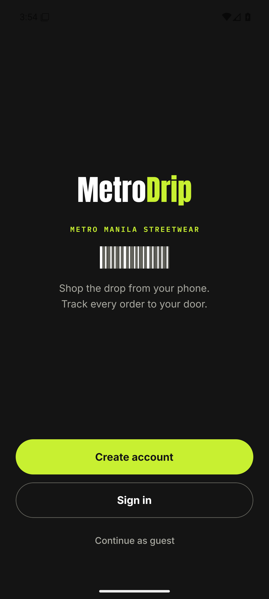
Open full-size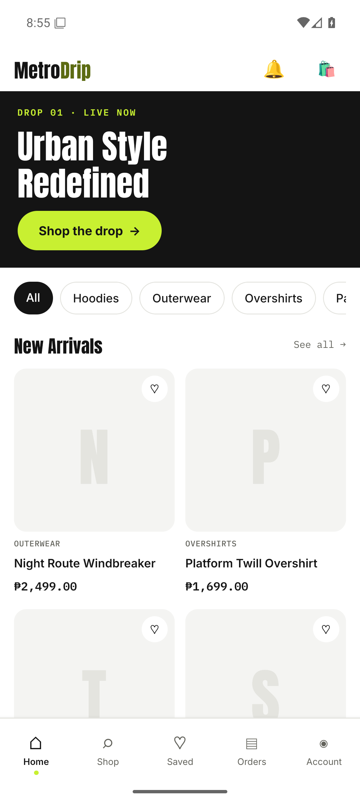
Open full-size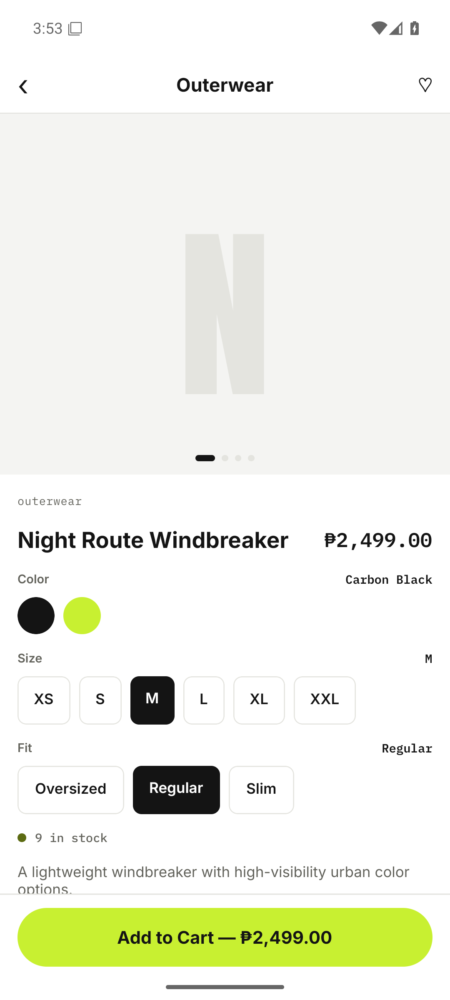
Open full-size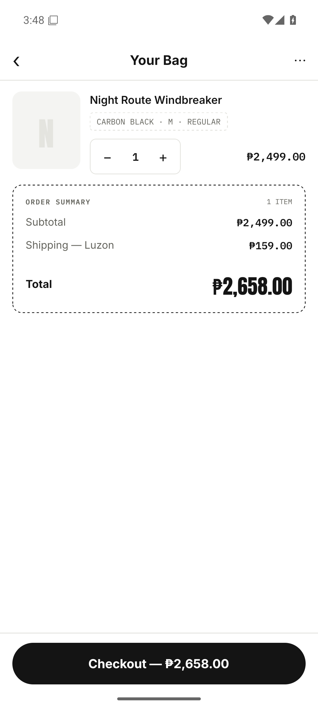
Open full-size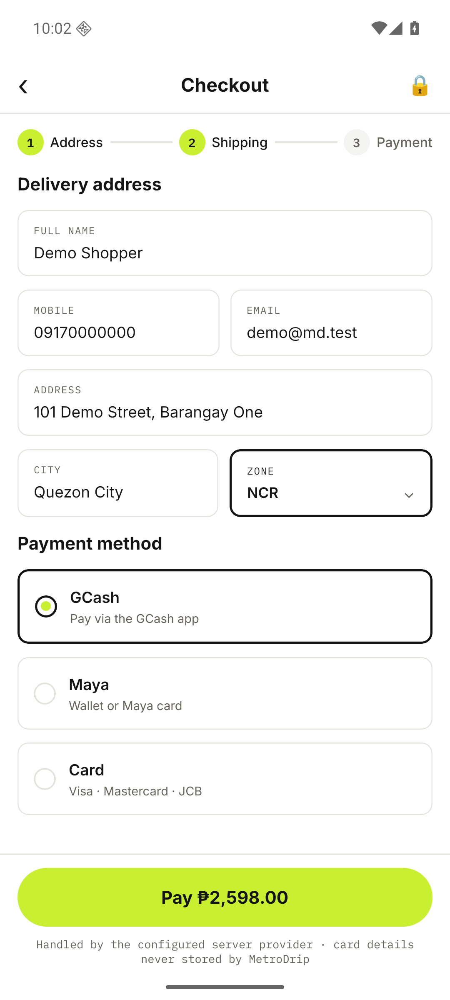
Open full-size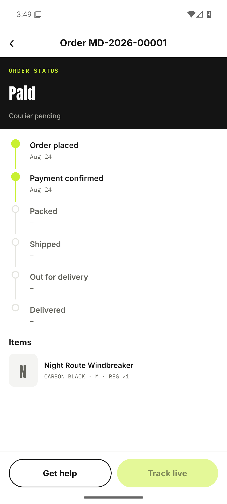
Open full-size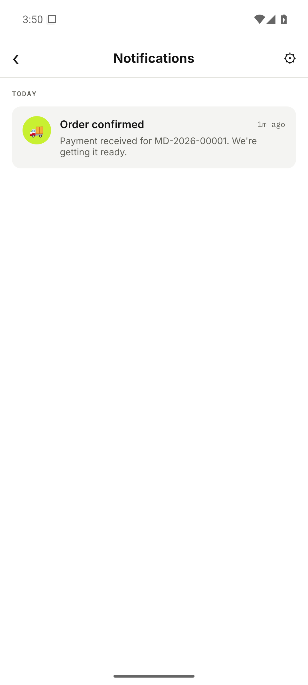
Open full-size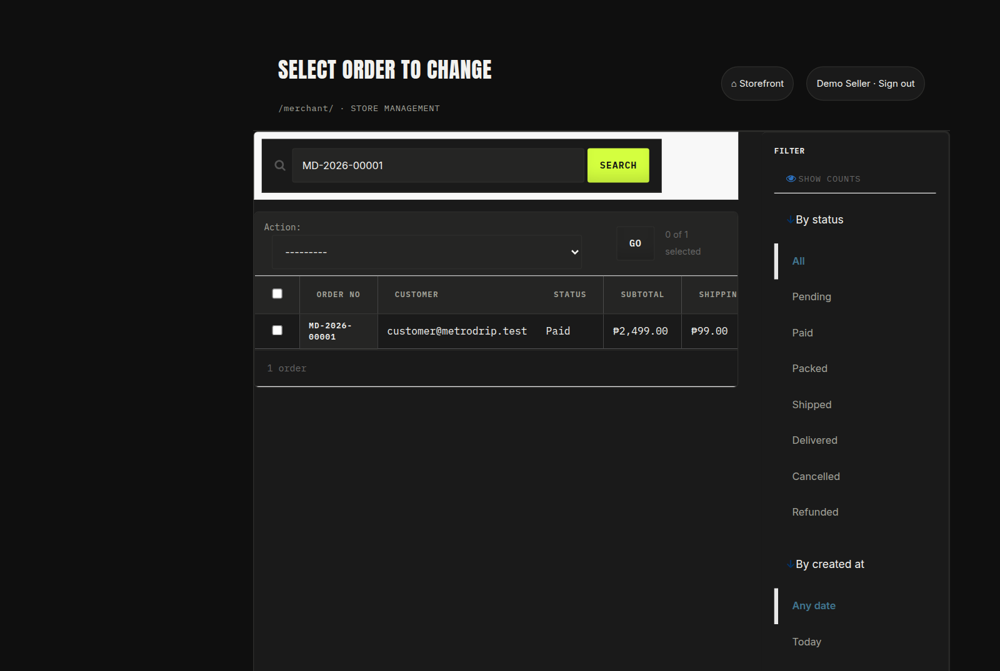
Open full-size
A failure at checkout — or an offline banner anywhere — almost always means the app cannot reach
Django. Check the server was started with 0.0.0.0:8080, and that
EXPO_PUBLIC_API_URL matches where the app is running. Those two account for the large
majority of first-run failures.
Mobile quality checks
Run these from mobile/ before pushing app changes:
npm run typecheck # tsc --noEmit; silence means success
npm run lint # expo lintThere is also a one-line check for the rule that matters most in this codebase — that the app never does money arithmetic:
Get-ChildItem src -Recurse -File -Include *.ts,*.tsx | Select-String -Pattern '(price|subtotal|total|fee)\s*[*+/-]'grep -rnE "(price|subtotal|total|fee)[[:space:]]*[*+/-]" src/grep -rnE "(price|subtotal|total|fee)[[:space:]]*[*+/-]" src/The only acceptable matches are inside comments. A match in real code means a total is being computed on the phone, which is the one thing the app is not allowed to do.
Mobile troubleshooting
| What you see | Why | Fix |
|---|---|---|
The launcher reports MetroDrip API is not ready |
Django or its MySQL dependency is stopped or unready | From the repository root run docker compose up -d --wait db redis, start Django on 0.0.0.0:8080 as printed, then rerun the launcher. |
The app shows an offline banner after --allow-offline |
The bypass was intentional, Django is bound incorrectly, or the API URL targets the wrong host | Remove the flag; bind the server to 0.0.0.0:8080; confirm EXPO_PUBLIC_API_URL matches the table in Step 11. |
HTTP 400 missing_client_version |
A request skipped the shared API client | Every call must go through src/api/client.ts, which attaches the version header. |
emulator: command not found |
PATH has not been reloaded |
Restart the terminal and your editor so they pick up ANDROID_HOME. |
adb devices is empty |
The emulator has not finished booting | Wait for the home screen, then run it again. |
| Emulator hangs on the boot logo | Hardware virtualisation is off | Enable it in BIOS (Windows) or check kvm-ok (Linux). Or use a real phone, which needs neither. |
| Expo asks for Expo Go or says no development build is installed | The MetroDrip development client has not been built for this emulator | Run npm run android:emulator once, then use npm run start:android:emulator. |
Failed to connect to /192.168…:8081 |
The launcher reopened a saved LAN URL while Metro listens on localhost, or an emulator restart removed ADB reverse | Run npm run start:android:emulator. It restores the mapping and opens the loopback URL without clearing app data. |
| Port 8081 is already occupied or incompatible | Another project or a LAN-mode Metro process owns the port | Stop that process, then rerun the emulator command. MetroDrip refuses to reuse a foreign manifest. |
| Edits do not appear, or the bundle looks stale | Metro's cache | Stop Metro, then run npm run start:android:emulator -- --clear to preserve the safe emulator transport. |
| The emulator helper refuses the reserved port | emulator-5554 belongs to a different AVD |
Identify it with adb -s emulator-5554 emu avd name, stop it yourself if safe, then start MetroDrip_Pixel_API36. The helper deliberately will not kill or reuse it. |
400 Bad Request naming your host, on a phone |
Your LAN address is not in ALLOWED_HOSTS |
Usually automatic; if the start-up lookup failed, add your IP in config/settings/dev.py. |
| A physical phone is offline while the emulator works | The phone has the wrong LAN URL, is on an isolated guest network, or the computer's firewall blocks port 8080 | Open http://<your-lan-ip>:8080/healthz/ready/ in the phone's browser, keep both devices on the same private Wi-Fi, and allow the Python development server through the private-network firewall only. |
| iOS reports a local-network permission or connection problem | The generated permission was denied, or the API address does not point at the Mac | Allow MetroDrip under iOS Local Network settings, confirm NSLocalNetworkUsageDescription exists after prebuild, and use the Mac's LAN address on a phone. |
Confirm hardware virtualisation, close competing emulators, and use Device Manager's Cold Boot once.
If adb devices still reports offline, follow mobile/EMULATOR.md and
use a physical Android phone rather than repeatedly changing MetroDrip code. An ADB boot failure occurs
below the application layer.
Stopping and cleaning up
| Goal | Command | Effect on your data |
|---|---|---|
| Stop the web server | Ctrl + C in its terminal | None |
| Stop Metro / the app bundler | Ctrl + C in its terminal | None |
| Close an Android emulator | Close its window, or adb -s emulator-5554 emu kill | Kept inside the emulator |
| Stop the database, keep data | docker compose stop | Kept |
| Remove containers, keep data | docker compose down | Kept |
| Delete everything, start fresh | docker compose down -v | Permanently deleted |
The -v flag deletes the storage volume — every product, order, and account in your local
database goes with it, and there is no undo. It is genuinely useful when you want a clean slate,
but only use it deliberately. Afterwards, re-run Step 6 to rebuild. The app
keeps its own local state — signed-in session, cart — inside the emulator or on the phone, so clearing
the database can leave the app holding references to orders that no longer exist. Sign out, or wipe the
emulator's data, if that confuses it.
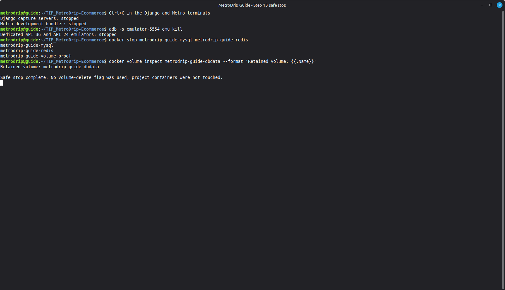
Open full-sizeTroubleshooting
| What you see | Why | Fix |
|---|---|---|
Cannot connect to the Docker daemon |
Docker Desktop is not running | Open Docker Desktop, wait for the whale icon to settle, then run docker info to confirm. |
Can't connect to MySQL server on '127.0.0.1' |
The container is stopped or still starting | docker compose up -d db redis --wait, then docker compose ps and docker compose logs db. |
port 3306 already allocated |
Another MySQL is already using that port | Stop the other MySQL service, or change the port in both docker-compose.yml and .env. |
Unknown database 'metrodrip' |
Container setup did not finish, or .env disagrees with Compose |
Compare .env against .env.example, check docker compose logs db, then restart the container. |
No module named pip inside .venv |
uv builds environments without bundled pip | Always install via uv pip install --python <venv-python> ... as shown in Step 3. |
Access denied when pytest creates test_metrodrip |
An old database volume predates the test-user grants | Back up anything you need, then docker compose down -v and redo Step 6. |
You must use --name with --noinput |
The custom user model needs a name as well as an email | Add --name "Local Admin" to the command. |
seed_demo reports all zeros |
Not an error — the data already exists | Count the rows using the check in Step 9. |
python or uv not recognised |
Your terminal has a stale PATH | Close every terminal and open a new one. On Windows, re-run the Python installer and tick “Add to PATH”. |
| Pages load but look unstyled | Static files were not found | Confirm you are running runserver with DEBUG on, and hard-refresh with Ctrl+Shift+R. |
| Console login rejects a correct password after enrolling 2FA | A confirmed TOTP device makes the password alone insufficient while that device exists | Enter the six-digit code. If the device is lost, have a second authorized administrator remove and re-enrol only that device. There is no self-service recovery flow; do not erase every Docker volume solely for this. |
Too many failed sign-in attempts on a console |
Five failures per account inside 15 minutes | Wait out the window, or restart the server — the counters are in memory locally, so a restart clears them. |
| Every console account is refused, including the superuser | CONSOLE_REQUIRE_OTP is on and nothing is enrolled |
Unset it, run manage.py check_console_otp, enrol a device, then turn it back on. |
| The catalogue holds hundreds of products, not five | The padded fixture scripts have been run and they accumulate | Not a fault. For a demo-shaped catalogue, reset the database and run seed_demo alone — see Step 6. |
| A test or migration seems frozen | Two processes are competing for the same database rows | Close any duplicate pytest or run_scheduler processes and run one suite at a time. |
Emulators, Metro, the offline banner, and pod install are covered separately in
Step 12, because almost all of them come down to one of two causes: the
server is not bound to 0.0.0.0, or the app is pointed at the wrong address.
Copy the last 20 lines of the error and the command you ran, and share both with the team. A screenshot of a single red line is rarely enough to diagnose anything.
 Open full-size
Open full-size
Cheat sheet
Once the one-time setup is done, this is all you need each day:
# 1. Start the database (Docker Desktop must be open).
docker compose up -d db redis --wait
# 2. Start the web server.
.venv/Scripts/python manage.py runserver
# 3. Open the storefront.
http://127.0.0.1:8000/# 1. Start the database (Docker must be running).
docker compose up -d db redis --wait
# 2. Start the web server.
.venv/bin/python manage.py runserver
# 3. Open the storefront.
http://127.0.0.1:8000/# 1. Start the database.
docker compose up -d db redis --wait
# 2. Start the web server.
.venv/bin/python manage.py runserver
# 3. Open the storefront.
http://127.0.0.1:8000/…and for the phone app
Same database, but the server binds differently and the app needs its own terminal:
# 1. Data containers.
docker compose up -d db redis --wait
# 2. Server, reachable from an emulator or phone.
$env:PAYMENT_PROVIDER="simulated"
.venv\Scripts\python.exe manage.py runserver 0.0.0.0:8080
# 3. Emulator, then the app (separate terminals).
& "$env:LOCALAPPDATA\Android\Sdk\emulator\emulator.exe" -avd MetroDrip_Pixel_API36 -port 5554
cd mobile; npm run start:android:emulator # first install: npm run android:emulator# 1. Data containers.
docker compose up -d db redis --wait
# 2. Server, reachable from a simulator, emulator, or phone.
PAYMENT_PROVIDER=simulated .venv/bin/python manage.py runserver 0.0.0.0:8080
# 3. The app (separate terminal). iOS boots its own simulator.
cd mobile && npm start # use npm run ios for the first install# 1. Data containers.
docker compose up -d db redis --wait
# 2. Server, reachable from an emulator or phone.
PAYMENT_PROVIDER=simulated .venv/bin/python manage.py runserver 0.0.0.0:8080
# 3. Emulator, then the app (separate terminals).
$ANDROID_HOME/emulator/emulator -avd MetroDrip_Pixel_API36 -port 5554
cd mobile && npm run start:android:emulator # first install: npm run android:emulatorFull command reference
| Command | What it does |
|---|---|
docker compose up -d db redis --wait | Start MySQL and Redis, waiting until both are ready |
docker compose ps | Show whether the container is running and healthy |
docker compose logs db | Read the database logs when something is wrong |
manage.py migrate | Create or update database tables |
manage.py seed_demo | Load the five sample products, stock, and pages |
manage.py seed_mock_catalog | Fill every subcategory with placeholder products |
manage.py seed_mock_catalog --dry-run | Preview that plan without writing |
manage.py runserver | Start the web server on port 8000 |
manage.py create_console_account | Create merchant or administrator (scoped console) |
manage.py sync_console_roles | Attach group permissions to console roles |
manage.py createsuperuser | Optional break-glass superuser (both consoles) |
manage.py check_console_otp | Report which staff accounts have no 2FA device |
manage.py check | Look for configuration problems |
manage.py run_scheduler | Start the background job runner |
manage.py shell | Open an interactive Python session with the project loaded |
manage.py makemigrations --check --dry-run | Fail if a model change has no migration |
pytest | Run the full test suite |
ruff check . | Lint the code |
runserver 0.0.0.0:8080 | Serve so an emulator or phone can reach it |
npm run android:emulator | Require a ready local API, build/install on the named AVD, restore ADB reverse, and open localhost Metro |
npm run start:android:emulator | Require a ready local API and reconnect the installed named AVD through verified localhost Metro |
npm start | Start LAN-oriented Metro for a physical device or iOS target |
npm run android / npm run ios | Generate, build, and install on a physical/Apple target |
npm run typecheck / npm run lint | App-side quality checks |
npm run start:android:emulator -- --clear | After stopping Metro, clear its cache while retaining the deterministic emulator connection |
npm run start:android:emulator -- --allow-offline | Bypass only the API readiness gate for an intentional offline-state test |
adb devices | List attached Android devices and emulators |
Your setup checklist
[ ] git, python, docker, and uv all print a version
[ ] Docker Desktop is running
[ ] Repository cloned, terminal is inside the project folder
[ ] .venv created and requirements installed
[ ] .env exists (copied from .env.example)
[ ] docker compose ps shows metrodrip-mysql as healthy
[ ] manage.py migrate finished without errors
[ ] manage.py seed_demo finished without errors
[ ] Optional only: seed_mock_catalog finished if category/pagination fixtures are needed
[ ] manage.py check reports no issues
[ ] http://127.0.0.1:8000/ shows the product grid
[ ] Optional fixture only: Browse Categories lists Men / Women per category
[ ] Optional fixture only: a subcategory link returns the count shown beside it
[ ] http://127.0.0.1:8000/healthz/ready/ returns {"status": "ok"}
[ ] Demo accounts created (customer / merchant / admin) — see Step 8
[ ] /accounts/login/ works with customer@metrodrip.test
[ ] /merchant/ works with merchant@metrodrip.test
[ ] /admin/ works with admin@metrodrip.test
[ ] curl -H "X-Client-Version: 1.0.0" .../api/mobile/v1/catalog/products/ returns JSON
Phone app (Steps 11-12) — skip if you only need the website:
[ ] node --version prints v22.13 or newer
[ ] mobile/ npm ci finished
[ ] mobile/.env exists and its URL matches where the app will run
[ ] Django started with runserver 0.0.0.0:8080
[ ] http://127.0.0.1:8080/healthz/ready/ returns {"status":"ok"}
[ ] emulator or simulator booted (adb devices shows "device")
[ ] named Android AVD: npm run android:emulator completed once
[ ] later Android AVD loop: npm run start:android:emulator restored ADB reverse and opened MetroDrip
[ ] physical device / iOS: npm run android or npm run ios completed, then npm start
[ ] the app opens on the onboarding screen
[ ] signed-in checkout reaches Paid tracking
[ ] Home → Notifications shows “Order confirmed”
[ ] the matching order appears in /merchant/ under Orders
[ ] npm run typecheck and npm run lint are cleanProject documentation
Deeper reference material, all in the repository:
This page is served by GitHub Pages, which can only deliver static files — it runs no application code and has no database. MetroDrip is a Django application backed by MySQL, so it has to run on your own machine (this guide) or on a real server (see the staging deployment docs).